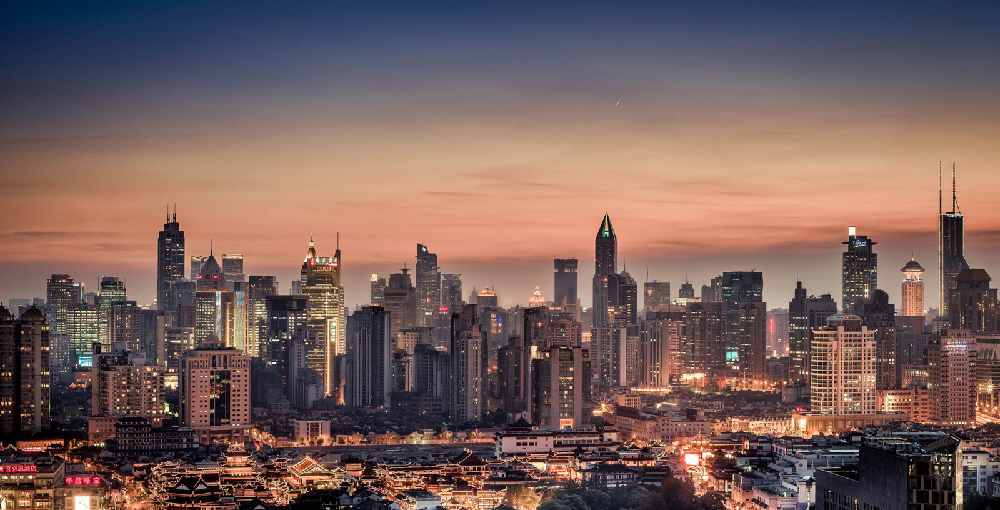
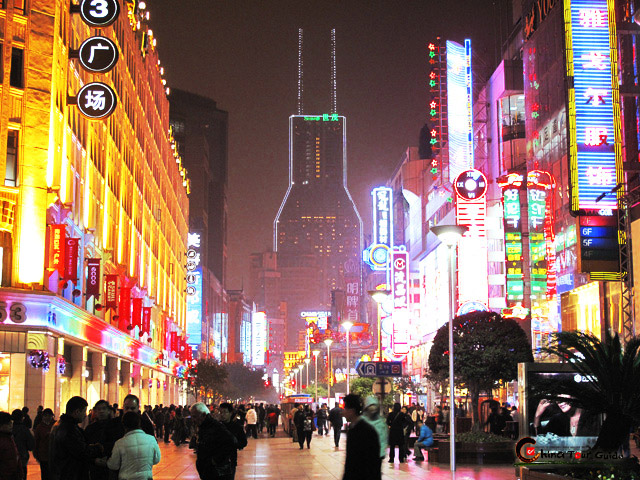

Back to the Coins
What's this?
Puxi - the west side of Shanghai, where I used to live. Puxi is the older city of Shanghai, and it held all the traces of old Shanghai. If you were to watch movies about Shanghai in the 1930s, they were usually in Puxi.
What's this?
Pudong - the east side of Shanghai. This is the new city which has only been developed for 50 years. The city planning of this side of the city is honestly way better than Puxi, and everything seems a lot more newer. However, if you imagine around 70 years ago, people had a saying that they rather have a bed in Puxi than have a house in Pudong. Pudong was farmland and everyone would rather have their lives in the extravagant city on the other side of the Huangpu River.
What's this?
Nanjing Pedestrian street - let's just say that if you have not been to this part of the city when you visited Shanghai, you have missed out. This place is a 20 minute walk away from the iconic Shanghai landmark, The Bund, but it is almost equally as iconic as The Bund. Here, you can walk pass historical architecture and do a little shopping if you have time. The lights that lit up these buildings are beautiful at night, and once in a while, you can see a group of old people singing songs of old Communist China.
The Bund